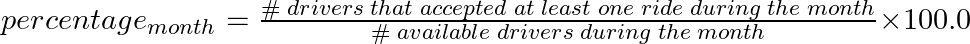

| Category | Difficulty | Likes | Dislikes |
|---|---|---|---|
| Database | Hard | 64 | 18 |
uber
Table: Drivers
+-------------+---------+
| Column Name | Type |
+-------------+---------+
| driver_id | int |
| join_date | date |
+-------------+---------+
driver_id is the column with unique values for this table.
Each row of this table contains the driver's ID and the date they joined the Hopper company.
Table: Rides
+--------------+---------+
| Column Name | Type |
+--------------+---------+
| ride_id | int |
| user_id | int |
| requested_at | date |
+--------------+---------+
ride_id is the column with unique values for this table.
Each row of this table contains the ID of a ride, the user's ID that requested it, and the day they requested it.
There may be some ride requests in this table that were not accepted.
Table: AcceptedRides
+---------------+---------+
| Column Name | Type |
+---------------+---------+
| ride_id | int |
| driver_id | int |
| ride_distance | int |
| ride_duration | int |
+---------------+---------+
ride_id is the column with unique values for this table.
Each row of this table contains some information about an accepted ride.
It is guaranteed that each accepted ride exists in the Rides table.
Write a solution to report the percentage of working drivers (working_percentage) for each month of 2020 where:

Note that if the number of available drivers during a month is zero, we consider the working_percentage to be 0.
Return the result table ordered by month in ascending order, where month is the month's number (January is 1, February is 2, etc.). Round working_percentage to the nearest 2 decimal places.
The result format is in the following example.
Example 1:
Input:
Drivers table:
+-----------+------------+
| driver_id | join_date |
+-----------+------------+
| 10 | 2019-12-10 |
| 8 | 2020-1-13 |
| 5 | 2020-2-16 |
| 7 | 2020-3-8 |
| 4 | 2020-5-17 |
| 1 | 2020-10-24 |
| 6 | 2021-1-5 |
+-----------+------------+
Rides table:
+---------+---------+--------------+
| ride_id | user_id | requested_at |
+---------+---------+--------------+
| 6 | 75 | 2019-12-9 |
| 1 | 54 | 2020-2-9 |
| 10 | 63 | 2020-3-4 |
| 19 | 39 | 2020-4-6 |
| 3 | 41 | 2020-6-3 |
| 13 | 52 | 2020-6-22 |
| 7 | 69 | 2020-7-16 |
| 17 | 70 | 2020-8-25 |
| 20 | 81 | 2020-11-2 |
| 5 | 57 | 2020-11-9 |
| 2 | 42 | 2020-12-9 |
| 11 | 68 | 2021-1-11 |
| 15 | 32 | 2021-1-17 |
| 12 | 11 | 2021-1-19 |
| 14 | 18 | 2021-1-27 |
+---------+---------+--------------+
AcceptedRides table:
+---------+-----------+---------------+---------------+
| ride_id | driver_id | ride_distance | ride_duration |
+---------+-----------+---------------+---------------+
| 10 | 10 | 63 | 38 |
| 13 | 10 | 73 | 96 |
| 7 | 8 | 100 | 28 |
| 17 | 7 | 119 | 68 |
| 20 | 1 | 121 | 92 |
| 5 | 7 | 42 | 101 |
| 2 | 4 | 6 | 38 |
| 11 | 8 | 37 | 43 |
| 15 | 8 | 108 | 82 |
| 12 | 8 | 38 | 34 |
| 14 | 1 | 90 | 74 |
+---------+-----------+---------------+---------------+
Output:
+-------+--------------------+
| month | working_percentage |
+-------+--------------------+
| 1 | 0.00 |
| 2 | 0.00 |
| 3 | 25.00 |
| 4 | 0.00 |
| 5 | 0.00 |
| 6 | 20.00 |
| 7 | 20.00 |
| 8 | 20.00 |
| 9 | 0.00 |
| 10 | 0.00 |
| 11 | 33.33 |
| 12 | 16.67 |
+-------+--------------------+
Explanation:
By the end of January --> two active drivers (10, 8) and no accepted rides. The percentage is 0%.
By the end of February --> three active drivers (10, 8, 5) and no accepted rides. The percentage is 0%.
By the end of March --> four active drivers (10, 8, 5, 7) and one accepted ride by driver (10). The percentage is (1 / 4) * 100 = 25%.
By the end of April --> four active drivers (10, 8, 5, 7) and no accepted rides. The percentage is 0%.
By the end of May --> five active drivers (10, 8, 5, 7, 4) and no accepted rides. The percentage is 0%.
By the end of June --> five active drivers (10, 8, 5, 7, 4) and one accepted ride by driver (10). The percentage is (1 / 5) * 100 = 20%.
By the end of July --> five active drivers (10, 8, 5, 7, 4) and one accepted ride by driver (8). The percentage is (1 / 5) * 100 = 20%.
By the end of August --> five active drivers (10, 8, 5, 7, 4) and one accepted ride by driver (7). The percentage is (1 / 5) * 100 = 20%.
By the end of September --> five active drivers (10, 8, 5, 7, 4) and no accepted rides. The percentage is 0%.
By the end of October --> six active drivers (10, 8, 5, 7, 4, 1) and no accepted rides. The percentage is 0%.
By the end of November --> six active drivers (10, 8, 5, 7, 4, 1) and two accepted rides by two different drivers (1, 7). The percentage is (2 / 6) * 100 = 33.33%.
By the end of December --> six active drivers (10, 8, 5, 7, 4, 1) and one accepted ride by driver (4). The percentage is (1 / 6) * 100 = 16.67%.